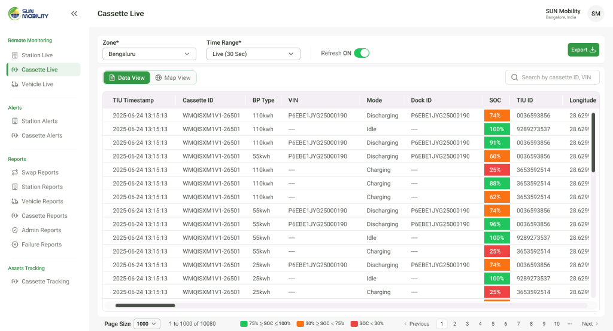
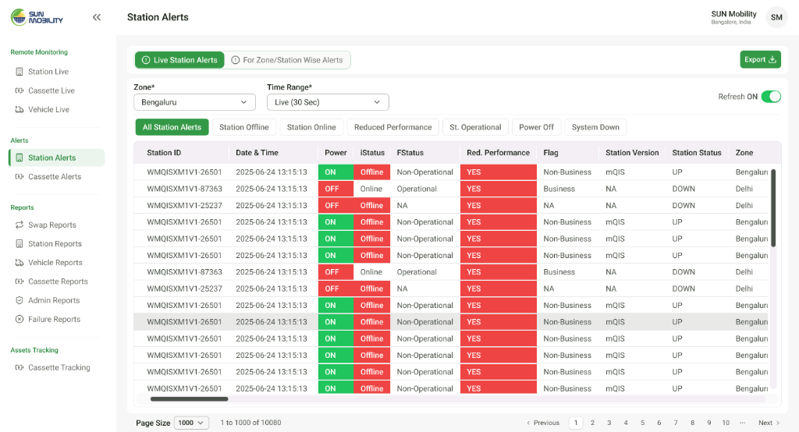
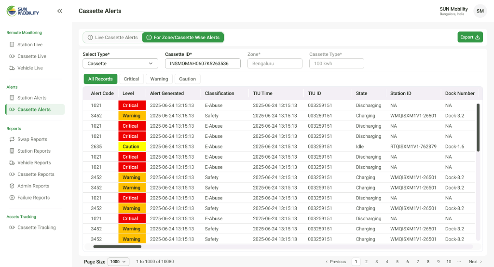

Designing the Central Network Operations Center (CNC) for high-throughput EV battery swap infrastructure


Context
Sun Mobility is a global pioneer in electric vehicle battery swapping technology, replacing conventional hours-long plug-in charging with automated 48-second battery pack swaps for commercial fleets, transit buses, and last-mile delivery vehicles.
The CNC (Central Network Command) Portal serves as the mission-critical central nervous system for network operations engineers, dispatch managers, and safety compliance teams. The portal continuously ingests high-frequency IoT telemetry streams from thousands of connected battery packs (Smart Cassettes), automated swap stations, and active commercial vehicle fleets operating across major metropolitan zones.
The Challenge
In high-throughput EV swapping, operational failures carry severe real-world consequences: a single dock charging fault or thermal anomaly can stall an entire commercial bus fleet during morning transit hours. Operators were previously overwhelmed by disconnected monitoring tabs, raw unparsed JSON telemetry streams, and lack of visual spatial mapping between physical charging docks and digital health diagnostics.
When an electric bus pulls into a swap bay, 48 seconds is the entire SLA. Operations engineers can't spend 30 seconds searching through database rows to figure out which battery dock is ready.
Principles that guided decisions
Map charging bays directly to their physical 5-rack spatial topology so technicians instantly locate empty, charging, cooling, or degraded docks without mental translation.
Standardize high-contrast severity tiers (Critical, Warning, Caution) for rapid thermal runaway prevention and electrical abuse mitigation.
Enable frictionless drill-down from citywide fleet density (10,000+ vehicles) down to individual station electrical phases and sub-pack State-of-Charge (SOC).
Design data tables and status pills to update dynamically in place without disorienting layout shifts or scroll jumping during high-frequency telemetry refreshes.
The Station Digital Twin & Physical Dock Matrix
Visualizing automated 5-rack charging stations in real time, connecting 3-phase grid power metrics directly with individual battery slot temperatures and State-of-Charge (SOC).
1. Spatial Rack Matrix with Real-Time Thermal & Voltage States
Instead of presenting swap stations as abstract metric lists, I designed an interactive Digital Twin Dock Matrix mirroring the physical station layout (Racks 1 through 5, with CTMS and BTMS thermal controllers). Docks clearly communicate their exact operational status (Empty Dock, 60% Charging at 725V/427A, 100% Ready for Swap at 28°C, or Active Chiller Cooling), while top-level KPI cards surface daily swap counts (120 Swaps: 90 Success, 30 Failures) and 3-phase power health (Phase R/Y/B).
Geospatial Fleet Tracking & Route Telemetry
Live GPS-synchronized tracking of 10,000+ commercial electric vehicles across urban corridors to optimize battery swap dispatch and prevent roadside depletion.
2. Citywide Density Mapping with Multi-Class Vehicle Categorization
Managing commercial fleets requires live spatial awareness. I architected the Vehicle Live map console, capable of rendering over 10,000 Heavy Electric Vehicles (Electric Transit Buses and Commercial Delivery Trucks) across metropolitan zones with instant customer-type and zone-level filtering, allowing dispatchers to detect fleet bottlenecks and route vehicles to high-capacity swap stations.
Battery Pack Diagnostics & Rapid Exception Triage
Sub-second telemetry monitoring across Smart Battery Cassettes and automated incident stream detection for station downtime prevention.
3. Granular Cassette Telemetry & State-of-Charge (SOC) Thresholding
Smart Cassettes represent the core energy assets. I structured the Cassette Live ledger to provide rapid scannability across 10,000+ battery packs, with high-visibility color-coded SOC badges (>75% Green, 30–75% Orange, <30% Red), battery chemistry types (25kWh, 55kWh, 110kWh), and real-time operational modes (Discharging on vehicle, Charging in dock, Idle).

4. Severity-Coded Incident Streams (Station & Cassette Alerts)
When hardware anomalies arise, operators need instantaneous triage. I designed synchronized alert feeds: Station Alerts flag electrical grid dropouts and non-operational bays, while Cassette Alerts categorize critical electrical abuse (E-Abuse), over-temperature events, and safety interlocks with clear severity hierarchy (Critical, Warning, Caution).


Key Outcomes & Impact
Based on live production telemetry metrics and central control room operational dispatch logs.